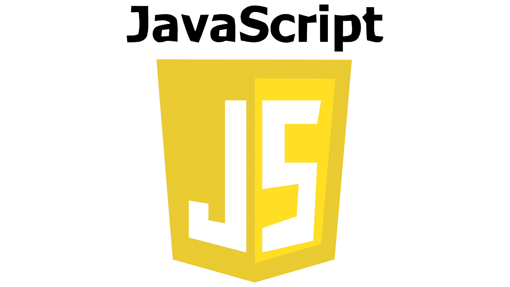
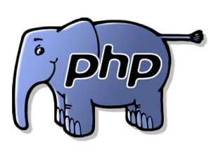
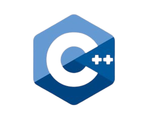
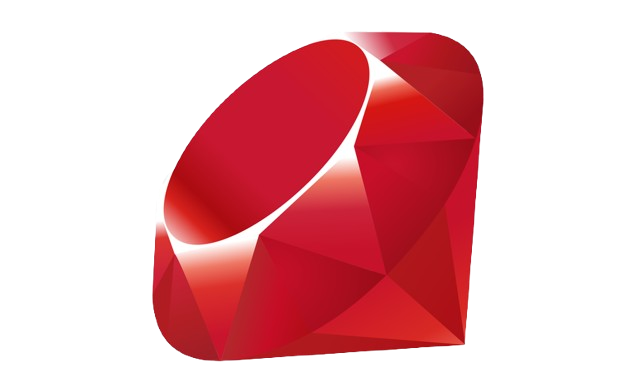
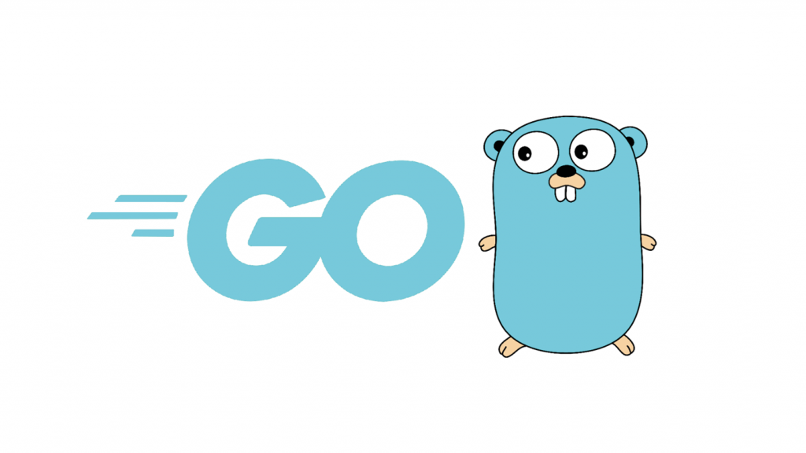
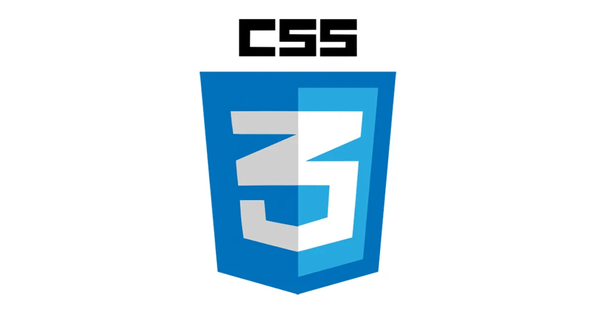
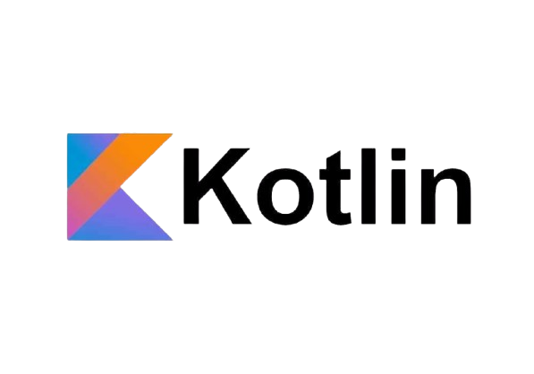
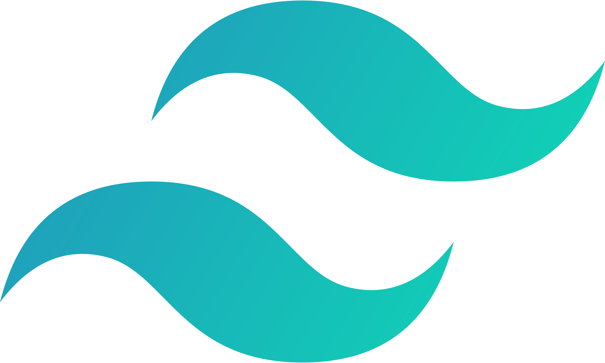

CodePedia

Java
Java dimulai pada tahun 1991 di Sun Microsystems melalui proyek bernama The Green Project. Tim yang terlibat dalam proyek ini terdiri dari James Gosling, Patrick Naughton, dan Mike Sheridan.

JavaScript
JavaScript pertama kali diciptakan oleh Brendan Eich, seorang karyawan Netscape, pada tahun 1995. Netscape kala itu merupakan perusahaan software ternama yang dikenal dengan web browser miliknya, Netscape Navigator.

PHP
PHP merupakan kisah perkembangan bahasa pemrograman yang kini digunakan miliaran website di seluruh dunia. Awalnya, PHP dibuat oleh Rasmus Lerdorf pada tahun 1994.

C++
C++ adalah bahasa pemrograman yang merupakan pengembangan dari bahasa pemrograman C. Bahasa ini telah memasukkan paradigma berorientasi objek (OOP) yang memberikan struktur yang sangat jelas dalam pengembangan program.

Ruby
Ruby pertama kali tersedia untuk umum pada tahun 1995, banyak programmer profesional di seluruh dunia yang terlibat serius dalam pengembangan Ruby.

Golang
Golang dirilis perdana pada bulan November 2009. Golang telah digunakan di lingkungan produksi oleh Google dan perusahaan lain

HTML
Pada tahun 1991, seorang fisikawan bernama Tim Berners-Lee menciptakan HTML sebagai cara untuk membagikan dokumen akademik secara efisien melalui jaringan komputer.
MongoDB
MongoDB (dari "humongous") adalah sistem basis data berorentasi dokumen lintas platform. Diklasifikasikan sebagai basis data "NoSQL", MongoDB menghindari struktur basis data relasional tabel berbasis tradisional yang mendukung JSON seperti dokumen dengan skema dinamis (MongoDB menyebutnya sebagai format BSON).

CSS
Cascading Style Sheet (disingkat CSS) adalah bahasa lembar gaya yang digunakan sebagai penentu presentasi dan gaya dokumen yang ditulis dalam bahasa markup seperti HTML dan XML.

React JS
React (dikenal juga dengan React.js atau ReactJS) adalah libray JavaScript yang digunakan untuk membangun user interface yang interaktif berbasis component.

Python
Python adalah bahasa pemrograman tujuan umum yang ditafsirkan, tingkat tinggi. Dibuat oleh Guido van Rossum dan pertama kali dirilis pada tahun 1991, filosofi desain Python menekankan keterbacaan kode dengan penggunaan spasi putih yang signifikan.

Kotlin
Kotlin adalah sebuah bahasa pemrograman dengan pengetikan statis yang berjalan pada Mesin Virtual Java ataupun menggunakan kompiler LLVM yang dapat pula dikompilasikan kedalam bentuk kode sumber JavaScript.

Mysql
MySQL adalah sebuah perangkat lunak sistem manajemen basis data SQL (bahasa Inggris: database management system) atau DBMS yang multialur, multipengguna, dengan sekitar 6 juta instalasi di seluruh dunia.

Bootstrap
Bootstrap adalah kerangka kerja CSS yang sumber terbuka dan bebas untuk merancang situs web dan aplikasi web. Kerangka kerja ini berisi templat desain berbasis HTML dan CSS untuk tipografi, formulir, tombol, navigasi, dan komponen antarmuka lainnya, serta juga ekstensi opsional JavaScript.

TailwindCss
Tailwind CSS adalah kerangka kerja (framework) CSS yang di dalamnya terdapat sekumpulan utility classes untuk membangun antarmuka kustom dengan cepat